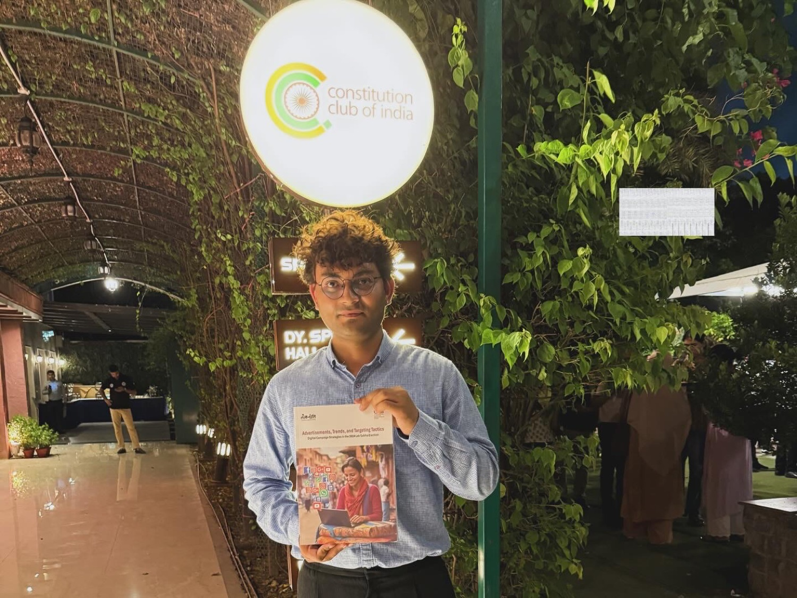
Constitution ClubHolding the CSDS digital campaign report
Delhi, India - Political Researcher - Writer - Policy Analyst
I am interested in elections especially how data, platforms, campaigns, and institutions shape public life in India.

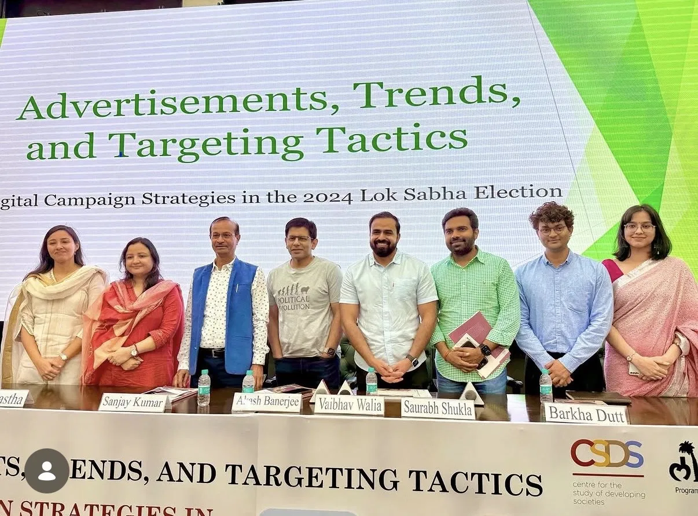
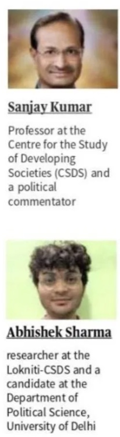
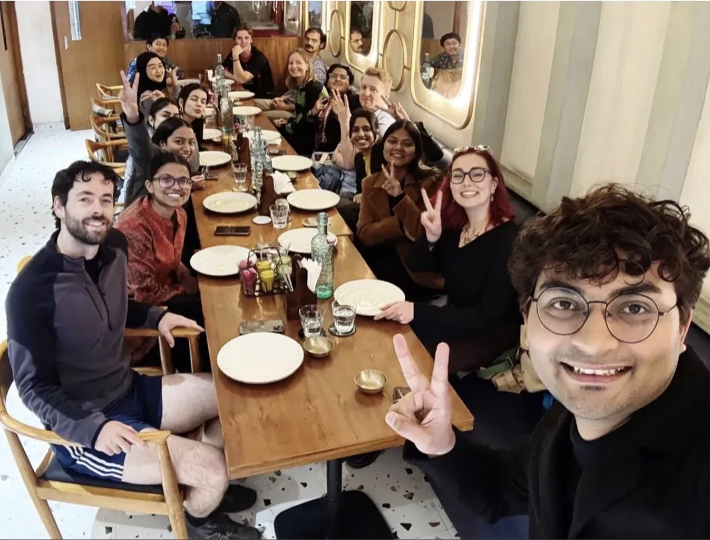
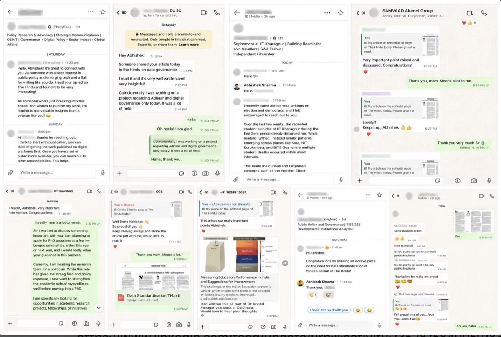
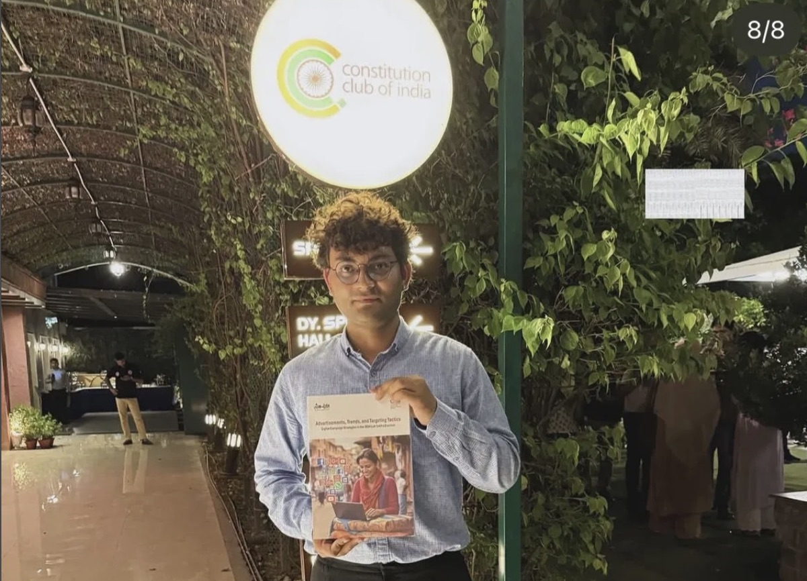
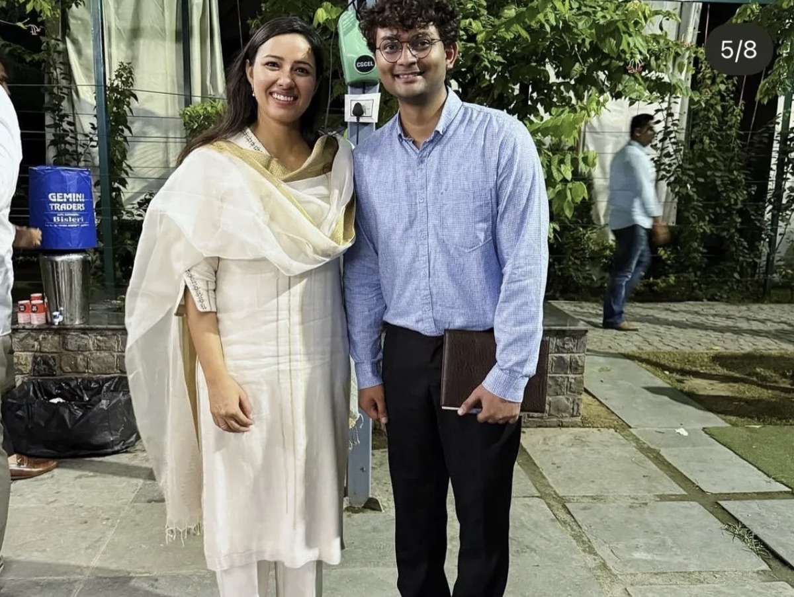
Published work on data governance, digital campaigns, voter behaviour, and democratic accountability.
Articles, reports, and policy-facing research that connect political data with democratic accountability.
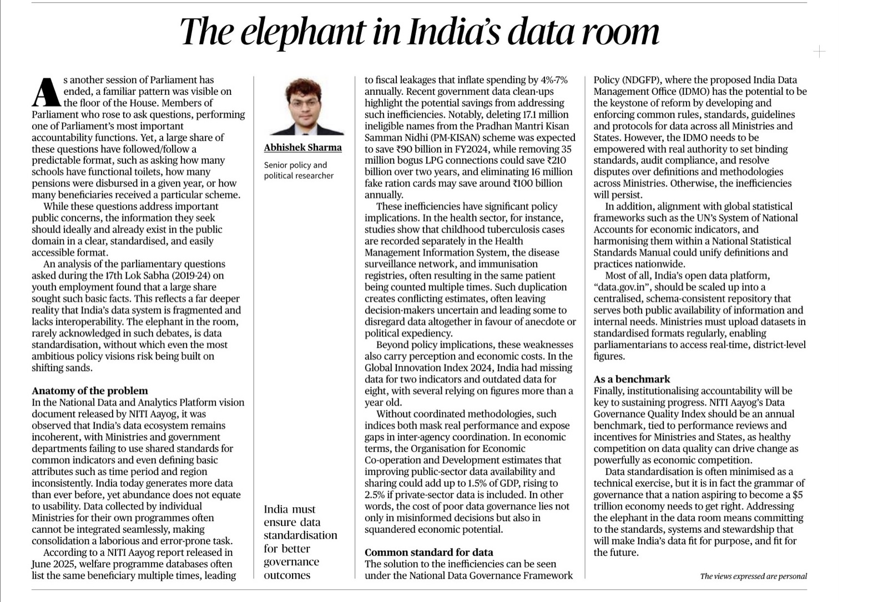
Data standardisation, interoperability, and the governance cost of fragmented public datasets.
Read Article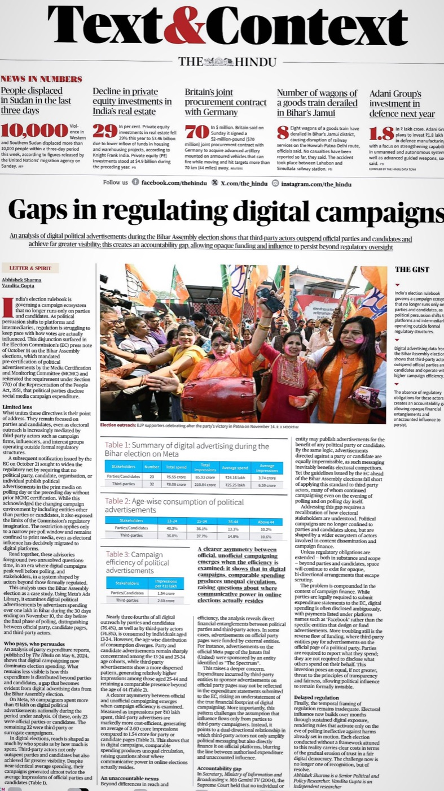
Digital campaign regulation, electoral transparency, and accountability gaps in platform politics.
Read Article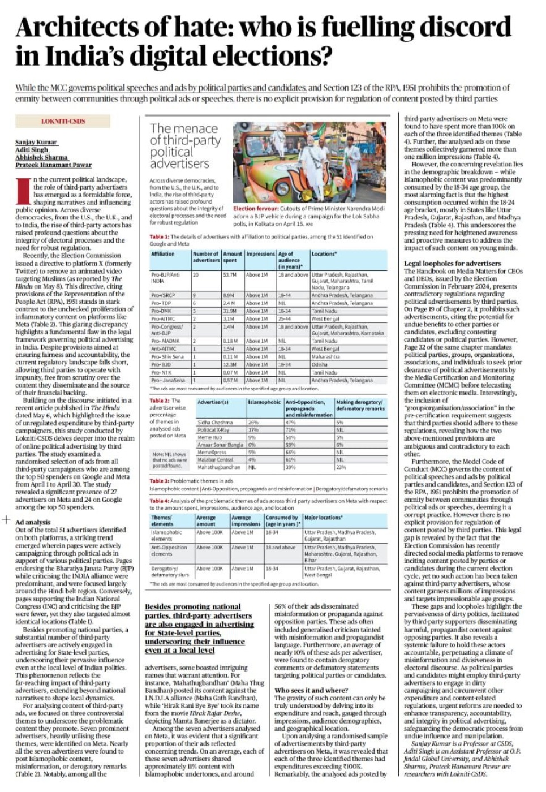
Third-party actors, inflammatory content, and regulatory blind spots in digital elections.
Read Article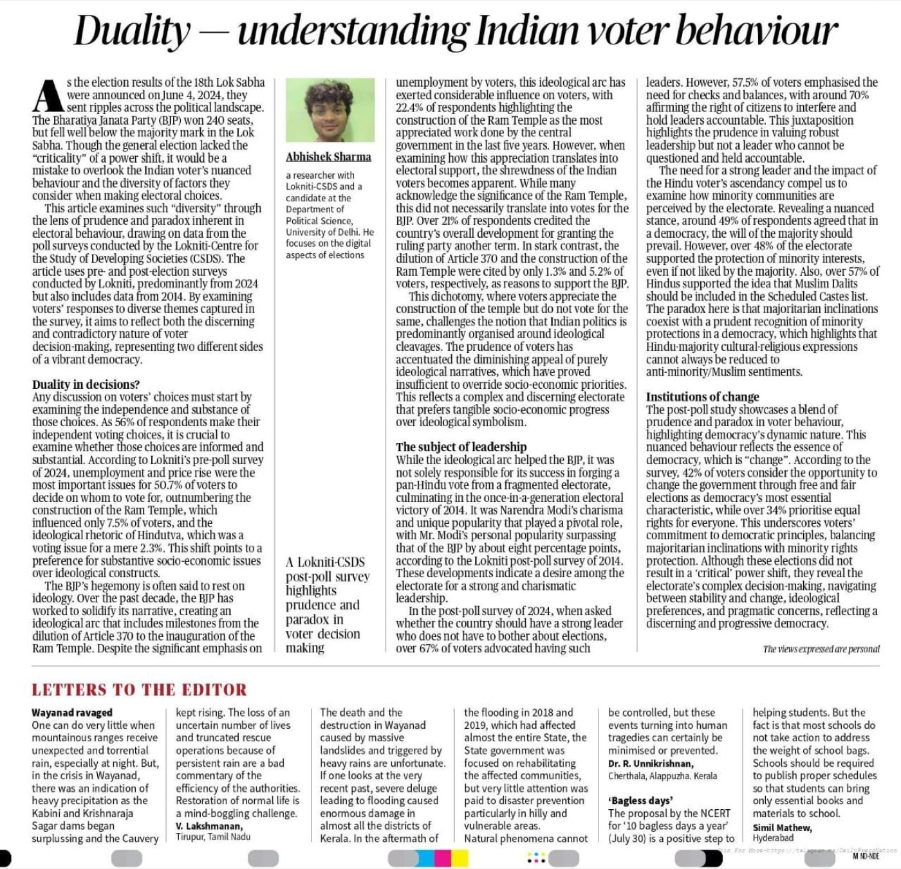
Voter behaviour, democratic change, and the layered nature of electoral decision-making.
Read Article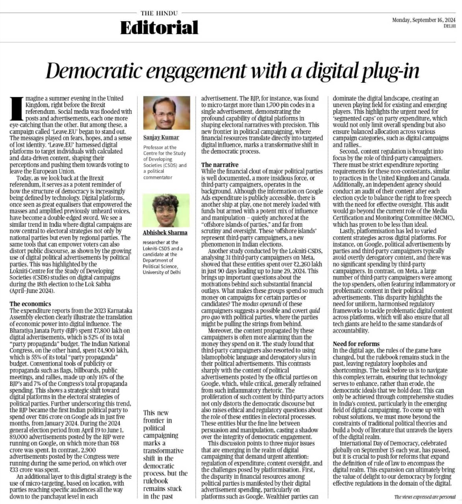
Digital democracy, campaign finance, platformisation, and the changing rulebook of elections.
Read Article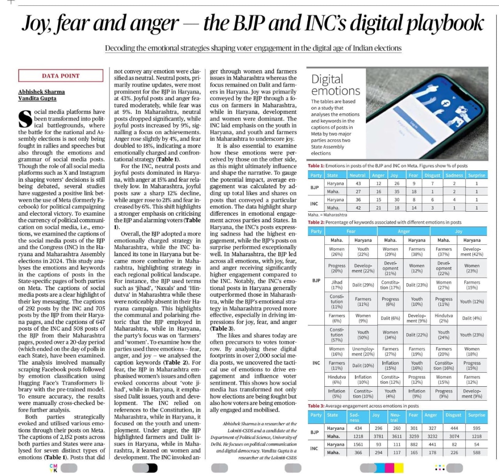
Emotional strategies and voter engagement in the digital age of Indian elections.
Read ArticleDigital campaigns, voter behaviour, language policy, data governance, and campaign regulation.
Youth employment, social justice, voter priorities, and Indian political behaviour.
Parliamentary attention to youth employment and policy questions drawn from public records.
A growing archive of public-facing research on Delhi governance, national politics, and digital democracy.
Governance, public infrastructure, public services, and political developments in the National Capital Territory.
Electoral behaviour, Parliament, political strategy, policy attention, and the public record behind national debate.
Digital campaigning, platform accountability, political advertising, persuasion, and democratic fairness online.
Research on governance, public infrastructure, public services, and political developments in the National Capital Territory.
An RTI-based analysis of sewage treatment capacity, utilisation, expenditure, and governance gaps across Delhi Jal Board 32 STPs.
Research streams on electoral strategy, voter behaviour, parliamentary questions, political timing, leadership narratives, and public policy.
Policy-facing analysis drawn from public parliamentary records and published writing on youth opportunity.
Research streams on digital campaigns, political advertising, platform accountability, online persuasion, campaign finance opacity, and regulatory fairness.
Work on platform politics, third-party campaigners, digital advertising, and the changing rulebook of democratic competition.
An RTI-based analysis of sewage treatment capacity, utilisation, expenditure, and governance gaps across Delhi Jal Board's 32 Sewage Treatment Plants (STPs).
The project examines treatment capacity, plant utilisation, expenditure disclosure, and governance gaps across Delhi Jal Board sewage infrastructure.
The analysis turns plant-level RTI disclosures into a public-facing record of capacity use, underuse, overload, and disclosure quality.
The report identifies utilisation patterns, financial disclosure gaps, operational anomalies, and governance risks across the STP network.
Explore the full interactive dashboard
View DashboardA policy intelligence workspace for exploring capacity, utilisation, financial transparency, information disclosure, and governance risk across Delhi Jal Board Sewage Treatment Plants (STPs).
Markers use coordinate-backed STP locations. Open any plant to inspect capacity, utilisation, expenditure disclosure, remarks, and Google Maps location.
The centre of the portfolio is the work itself: published articles, policy-facing research, national reports, and writing that turns political data into arguments a wider public can use.
The archive moves between digital campaigns, voter behaviour, governance, Parliament, and public policy.
No matching work found.
"Someone shared your article today in The Hindu on data governance. I read it - it is very well written and very insightful."
Reader message - Data governance piece"Congratulations on penning an incisive piece on the need for data standardisation in today's edition of The Hindu."
Reader message - The Hindu"I recently came across your writings on election and democracy, and I felt encouraged to reach out. This brings out really important points."
IIT Kharagpur reader - Electoral writingThis section is designed to signal more than affiliation. It shows the research rooms, political offices, scholars, journalists, public policy teams, and field-facing projects that shaped the way Abhishek works.
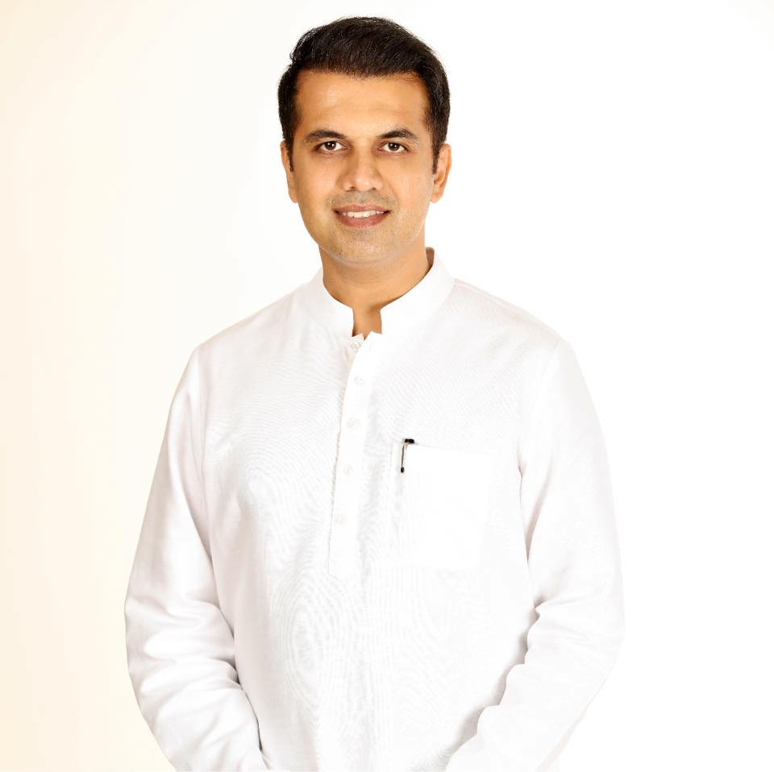
AICC Secretary in Karnataka.
Current office
Director, Lokniti-CSDS and one of India's leading psephologists. Research supervision and co-authorship on digital democracy and electoral communication.
CSDS - Research mentor
Researcher at CSDS and PhD candidate at the National University of Singapore. Supervisor of the CSDS digital election project.
CSDS - Project supervisor
Senior Research Fellow, CERI-Sciences Po; Professor, King's College London. Co-author on public opinion and Indian politics for The Wire.
Co-author - The Wire
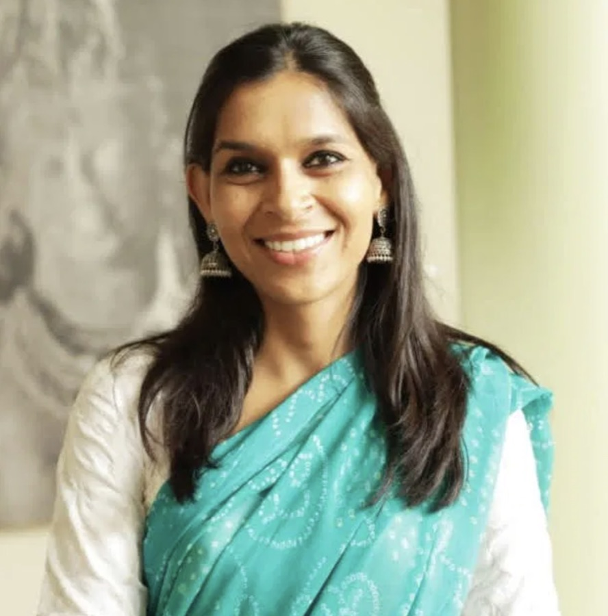
Executive Director, Future of India Foundation. Public policy leader working on democratic governance, institutional reform, political strategy, and youth opportunity.
FoIF - Co-author
Policy researcher and alumna of the University of Edinburgh. Co-author on youth employment, parliamentary questions, and digital election writing.
Co-author - FoIF and The Hindu
PhD scholar at the University of California, USA. Part of the wider academic network around political science, research training, and comparative politics.
Academic network - UC
Current role leading a team of researchers and interns, managing weekly targets, stakeholder consultations, recruitment, research proposals, election briefs, speech inputs, RTIs, and campaign strategy documents.
Digital election studies during the 2024 Lok Sabha election under Prof. Sanjay Kumar. The work culminated in a national report on digital political communication and multiple public-facing findings in The Hindu.
Co-led the Parliamentary Research Program, coordinated a large cohort of interns, and contributed to a report on youth employment based on 60,000+ parliamentary questions.
Selected as one of nine students from a pool of 600+ for the Universitas 21 exchange program focused on security, development, and comparative academic collaboration.
Editorial and analytical writing across digital democracy, voter behaviour, political advertising, campaign finance, language policy, and parliamentary attention to youth employment.
Team leadership, proposal pipeline, consultations, and political research systems.
Digital election studies and national report on the 2024 Lok Sabha campaign.
Parliamentary questions, youth employment, and policy intern coordination.
Early public policy research training and exposure to policy writing workflows.
The credentials section keeps the formal record compact: education, exchange selection, parliamentary training, and national science recognition before the political research career accelerated.
M.A. in Political ScienceDepartment of Political Science, University of Delhi
Universitas 21 Exchange ProgramUniversity of Melbourne x University of Delhi. Selected as 1 of 9 from 600+ students.
Basic Certificate in Parliamentary QuestionsInstitute of Constitutional and Parliamentary Studies
Bachelor of ArtsUniversity of Delhi
Head of ResearchOffice of Abhishek Dutt, National Secretary, AICC and Co-Incharge, Karnataka
Lead contribution to CSDS digital politics reportReport launched at the Constitution Club of India
Lead editorial in The HinduCo-authored with Prof. Sanjay Kumar on digital democracy
National Child Scientist25th National Children's Science Congress, NCSTC, Department of Science and Technology, Government of India
National Children's Science Congress and MHRD recognitionCertificates of appreciation from national-level science and education bodies
These are the questions currently shaping the next phase of work: state elections, platform politics, political timing, voter response, and municipal governance data.
Open to research collaborations, data partnerships, field support, writing commissions, fellowships, and institutional homes for these projects.
Project 01
A candidate- and constituency-level study of social media activity during state and assembly elections, mapped against news narratives to understand how political stories travel, mutate, and diverge across constituencies.
Project 02
A structured framework mapping major political decisions against election timelines. The working hypothesis is that high-appeal, low-risk decisions cluster close to elections while controversial moves are made earlier to allow recovery.
Project 03
A second layer to the Electoral Clock project, connecting voter behaviour data, survey evidence, and socioeconomic indicators to test whether timing strategies shape outcomes across different regions and contexts.
Project 04
A data-driven audit of Delhi municipal wards using public datasets, RTIs, and a pilot across 10-15 wards. The work begins with a data gap analysis that shapes the RTI strategy and scorecard design.
This is where report release photographs, screenshots of praise, byline images, university exchange pictures, and high-engagement LinkedIn posts can live without breaking the editorial seriousness of the site.
A horizontal highlight from the launch, keeping the full panel and the report title visible.
Selected as one of nine students from a pool of 600+ for cross-continental academic collaboration.
Reader messages, article screenshots, and responses to writing on data, elections, and democracy.
A personal marker from the CSDS digital political communication report release.
A project-supervision and launch moment from the CSDS digital election study.
A visible trace of the editorial work emerging from the Lokniti-CSDS research period.
Available for research collaborations, policy consulting, writing commissions, fellowships, media queries, and academic opportunities.